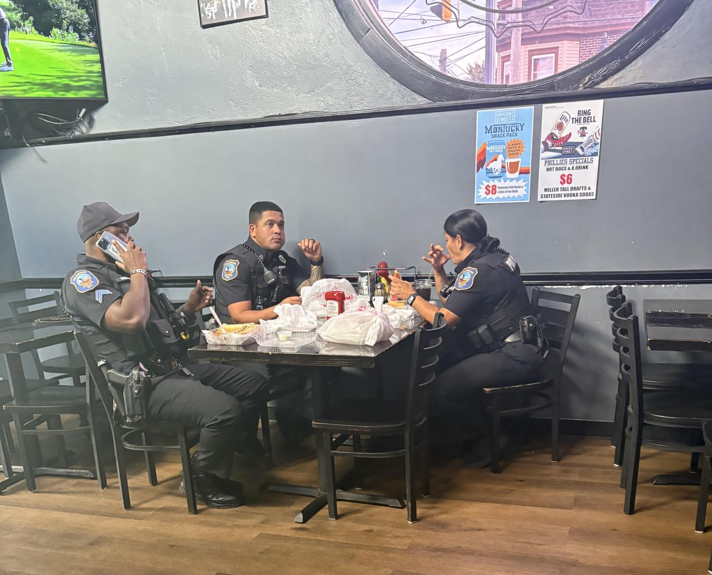

About
Meet Shawn Dottery
Republican candidate for State Representative in Delaware’s 3rd District. Working hard. Staying humble. Fighting for you.
I’m Shawn Dottery, and I’m running for State Representative because I believe the quiet people deserve a voice.
I’m talking about the people who get up every morning and go to work. The people who pay their bills, raise their children, take care of aging parents, help their neighbors, and quietly do their part to keep our communities going.
They don’t ask for much. They don’t have lobbyists. They don’t make the headlines. They don’t spend every day shouting about politics.
They just work.
But today, too many of these people feel forgotten. Their groceries cost more. Their utility bills are higher. Homeownership feels further out of reach. They worry about crime, education, and whether their children will have better opportunities than they did.
I’m running to be their voice.
I believe government should respect the people who work hard, play by the rules, and contribute to their communities.
This isn’t about left versus right. It’s about whether the people who keep Delaware moving have someone willing to stand up for them.
I’m Shawn Dottery, Republican candidate for State Representative in Delaware’s 3rd District.
I’m asking for your vote because it’s time the quiet people had a voice.
More to Come
Getting to Know Shawn
Additional biography details will be added here as the campaign shares more about Shawn’s family, work, and community life.
Family
Family background and the people closest to Shawn will be featured here.
Work History
Professional experience and the work that shaped Shawn’s outlook will go here.
Community Involvement
Local service, partnerships, and neighborhood work will be highlighted in this section.

Why this race matters
Shawn is running for the people who keep Delaware moving every day – working families, first responders, seniors, small business owners, and parents who want safer neighborhoods and a fair shot at a good life.
If that sounds like you, this campaign is yours. Join us, share your story, and help give the quiet people a voice.
Take Action
Stand with Shawn
Volunteer, donate, or join the email list. Every bit of support helps this campaign reach more neighbors.